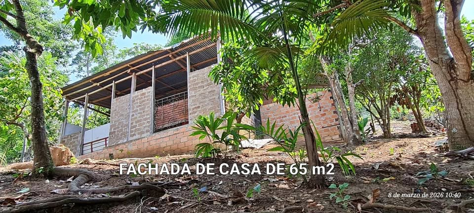

PEN40,000 225 m²

TERRENO URBANO CON TÍTULO EN Registros Públicos. SUNARP Ideal para casa de campo / vacaciones, hospedaje rústico, puede lotizar para venta. Terreno Urbano de 2,225 m2, en esquina con acceso a 3 calles. Cerca a la quebrada Shanahuillo. Árboles frutales: 2 caimitos 2 mangos injertos 2 mandarinas 35 cacaos 4 guineos 3 palmeras 2 mandarinas 1 lima 1 mamey 2 cocos Documentos listos para transferencia notarial. A 2 minutos caminando de la plaza principal del distrito de Shanao (provincia de Lamas) A 45 minutos del aeropuerto de Tarapoto yendo por la carretera Belaunde Terry. Precio negociable. Ma